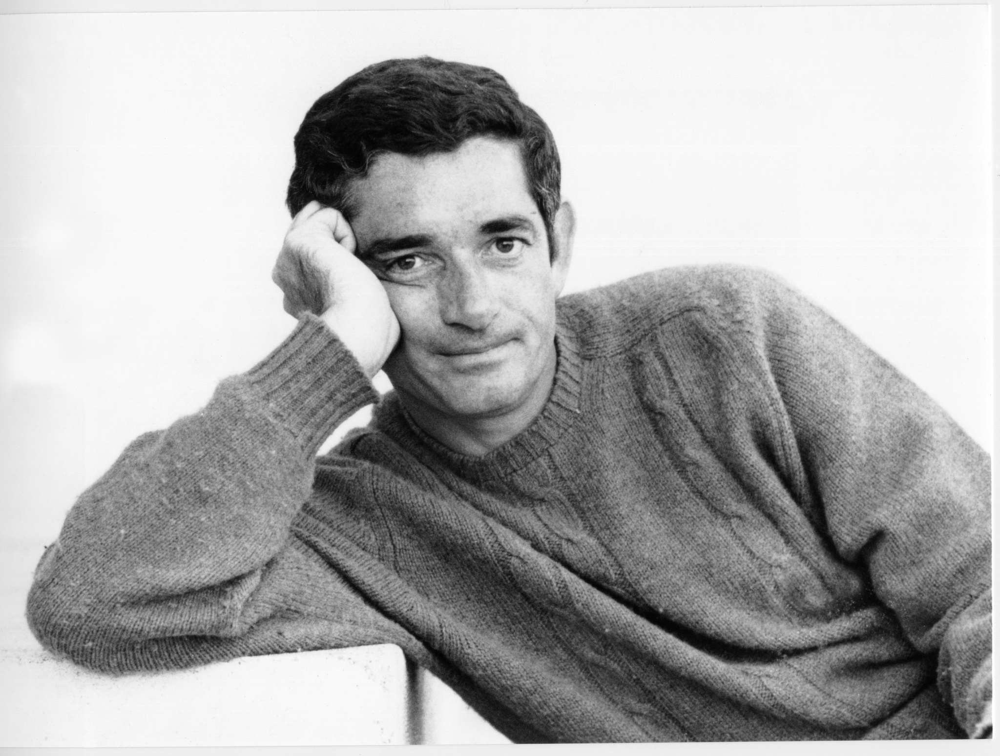
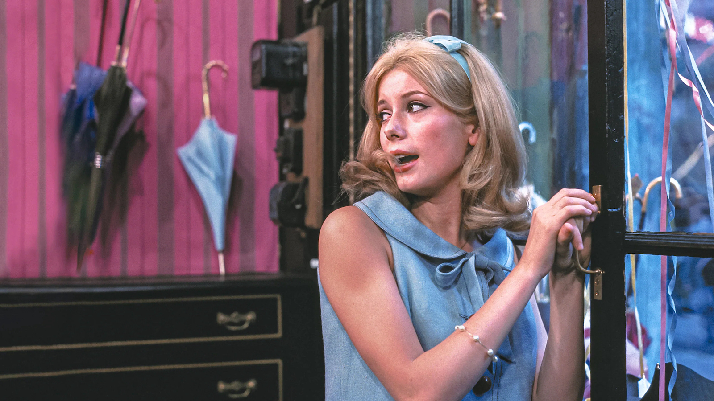

- Jacques
- Filmes
- Prêmios
Quem foi Jacques Demy?

Nascido no dia 5 de junho de 1931 na cidade de Pontchâteau, na França, Jacques Demy foi um
aclamado diretor e roteirista do cinema francês. As obras de Jacques destacam-se pelo seu
aspecto lúdico, fantasioso e ao mesmo tempo político.
Alguns de seus filmes mais aclamados:
Umbrellas Of Cherbourg


A obra mais importante na carreira de Jacques é, sem sombra de dúvidas, o excelente
'Umbrellas Of Cherbourg'. Com um trama novelesca, dramática e altamente musical, é onde Jacques
demonstrou sua sensibilidade artística em seu máximo.